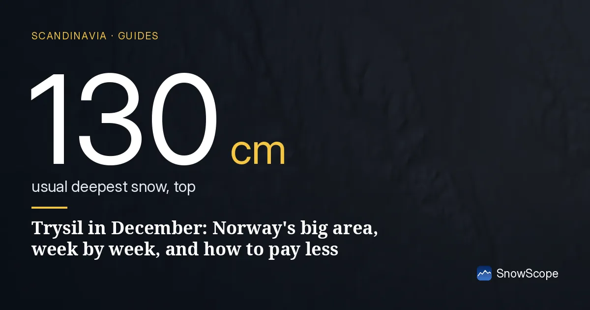
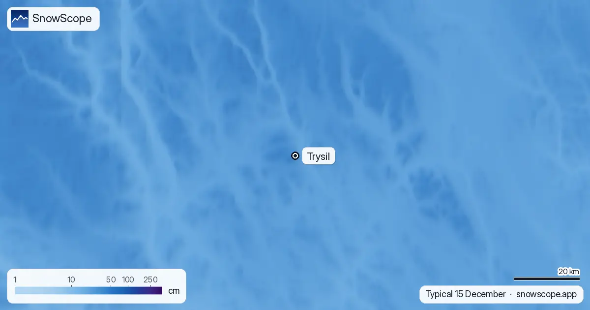

Trysil فدجنبر: أكبر محطة فالنرويج سيمانة بسيمانة، وكيفاش تخلص قل
الرقم المهم: نهار 15 دجنبر عادي، Trysil فيها 44 سم ديال التلج فالوسط (758 م) فالتاريخ ديالنا ديال 46 شتوة، و 83 % من الشتوات كان فيهم 30 سم ولا كثر تما فسيمانة 15 حتى 21 دجنبر. دجنبر صحيح لأكبر محطة فالنرويج، فيها 101 كم ديال البيستات و 40 تيليسييج.
شوف توقعات التلج مباشرة ديال Trysil فالتطبيق ديال SnowScopeالعلو ديال التلج، التنبيهات والخريطة 3D، فابور.
بداية دجنبر
السيمانة الأولى هي الضعيفة. من 1 حتى 7 دجنبر غير 57 % من الشتوات كان فيهم 30 سم فالوسط، و 30 % لتحت (407 م). الفوق (1109 م) أضمن ب 76 %. فهاد الشمال، النهار فدجنبر قصير: حسب ساعات قل فالبيست وكثر فالدار.


نص دجنبر
من 15 حتى 21 دجنبر الصورة مزيانة: 83 % ديال الشتوات فيهم 30 سم فالوسط و 89 % فالفوق. نهار 15 دجنبر عادي فيه 26 سم لتحت، 44 سم فالوسط و 60 سم فالفوق. حتى عام ضعيف (واحد من 10) كيبقى فيه 21 سم فالوسط.
سيمانة نوال
سيمانة نوال هي الأحسن فالشهر: 87 % ديال الشتوات كان فيهم 30 سم فالوسط و 93 % فالفوق، و 59 % كان فيهم 60 سم ولا كثر لفوق. التحت كيلحق معطل: النهار العادي ديال 30 سم تما هو 18 دجنبر.
زمان ودابا
المعدل ديال دجنبر فالوسط نزل من 52 سم فأول 15 شتوة ل 41 سم فآخر 15، والنسبة ديال سيمانات نوال اللي فيهم 30 سم لتحت طاحت من 87 % ل 60 %. الفوق صمد كثر: 100 % و 87 %.
الشتوة اللي فاتت كتبين الجوج وجوه: 62 سم فالفوق نهار 15 دجنبر، ولكن غير 4 سم لتحت نهار 24 دجنبر.
الحساب
Trysil كتبيع السكيباس بأثمنة متبدلة فالحانوت الرسمي أونلاين ديال الشركة: الثمن على حساب التاريخ وشحال بكري كتشري. نهار 13 نونبر 2026 ما قدرناش نقراو حتى ثمن ثابت فالصفحة الرسمية، إذن ما كنعطيو حتى رقم. القاعدة مع هاد النوع ديال الأثمنة ساهلة: شري أونلاين، بكري، ولتواريخ برا عطلة نوال.
مقارنة مع Sälen
Sälen، من الجهة الأخرى ديال الحدود فالسويد، هي الاختيار الكبير الآخر للعائلات فدجنبر. هي أهبط وأكثر استواء: التاريخ ديالنا كيعطي قيمة وحدة للمحطة كاملة، 28 سم نهار 15 دجنبر عادي، و 48 % ديال الشتوات فيهم 30 سم فسيمانة 15 حتى 21 دجنبر. الوسط ديال Trysil أحسن بوضوح، والفوق ديالها كثر.
نصايح للي كيتزلجو
- ختار من 15 حتى 21 دجنبر ولا سيمانة نوال: النسبة ديال الشتوات اللي فيهم 30 سم فالوسط كتطلع من 57 % فالسيمانة الأولى ل 83 % و 87 %.
- شري السكيباس أونلاين بكري ما أمكن؛ مع الأثمنة المتبدلة، الشرا المعطل لتواريخ مطلوبة كيغلى.
- حسب النهار القصير فدجنبر: بدا مع أول ضو وخلي الغدا قصير.
- لبس للبرد الحقيقي: دجنبر فالداخل ديال النرويج يقدر يكون قاسح بزاف.
خرائط أخرى (مواقع خارجية)
المراجع والمصادر
- Trysil: official lift-pass page of the operator (prices by date; no fixed price quoted), checked 13 November 2026 www.skistar.com/en/winter/skipass/buy-skipass/lift-pass-trysil/
- Sälen: official lift-pass page of the operator (prices by date; no fixed price quoted), checked 13 November 2026 www.skistar.com/en/winter/skipass/buy-skipass/lift-pass-salen/
على هاد الأرقام
الأرقام ديال التلج: التاريخ ديال التلج ديال SnowScope، 46 شتوة اللي فاتت (1980-81 حتى ل 2025-26) فالعلوات ديال المحطة، مصحح بالعلو (تقدير لمنطقة، ماشي البلاغات ديال المحطة)؛ «تلج مزيان» = 30 سم ولا كثر فالأرض فالمعدل ديال السيمانة. الخريطة: العلو العادي ديال التلج نهار 15 دجنبر موزع على التضاريس حسب العلو. البيستات والتيليسييجات: OpenSkiMap. الأثمنة ديال السكيباس: اللوائح الرسمية ديال المحطات، متشافة نهار 13 نونبر 2026؛ الأثمنة تقدر تتبدل.
النشرات الرسمية ديال الانهيارات: Varsom (NVE)
كيفاش تستاشهد بهاد المقال
للبحث، التعليم ولا الصحافة: الأرقام والرسومات تقدر تعاود تخدم بيهم بحرية تحت CC BY 4.0 مع هاد الاستشهاد.
SnowScope (2026), Trysil فدجنبر: أكبر محطة فالنرويج سيمانة بسيمانة، وكيفاش تخلص قل, https://snowscope.app/blog/ar/2026/11/trysil-december-skiing-norway-budget-dark-days.html, تشاف ف 2026-11-14
SnowScope (Atlas Labs). (2026, November 14). Trysil فدجنبر: أكبر محطة فالنرويج سيمانة بسيمانة، وكيفاش تخلص قل. SnowScope snow reports. https://snowscope.app/blog/ar/2026/11/trysil-december-skiing-norway-budget-dark-days.html
BibTeX
@misc{snowscope2026trysildecemberskiingnorw,
author = {{SnowScope (Atlas Labs)}},
title = {Trysil فدجنبر: أكبر محطة فالنرويج سيمانة بسيمانة، وكيفاش تخلص قل},
year = {2026},
month = nov,
howpublished = {\url{https://snowscope.app/blog/ar/2026/11/trysil-december-skiing-norway-budget-dark-days.html}},
note = {Published 2026-11-14 13:29 UTC; accessed 2026-11-14}
}· CC BY 4.0 · الطريقة، الداتا والأدوات →
Trysil: التلج والحرارة حسب العلو، هاد الشتا مقارنة مع اللي فاتت (الأدوات) →
تابع Trysil
فابور: ميساج ملي يجي التلج، والتوقعات كل صباح.